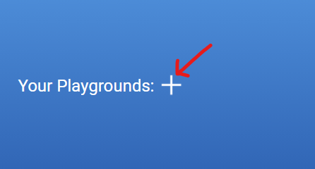
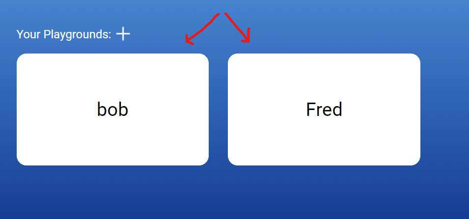
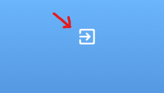
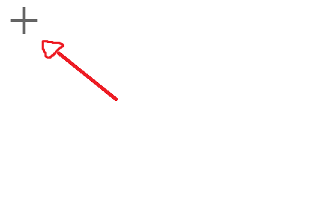
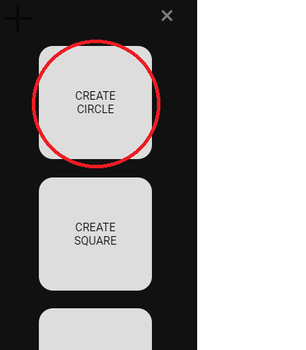
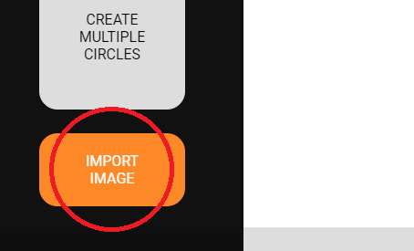
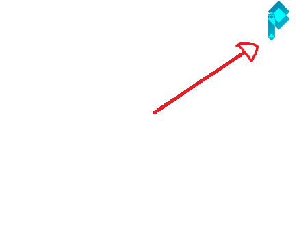
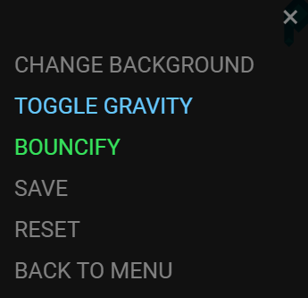

To add a new playground, press the white "+" icon and type the name of the playground you want to make. Then press save.
To go to a playground, click on one of the pannels.
To logout, press the logout button in the top right.
To create a new object, click the grey "+" icon in the top-left corner to bring out the Create Menu.
Click on one of the boxes to create an object, or import an image by selecting your own file.
 To access the Playground control panel, click the top-right Playground icon.
From here, you can change the background by importing your own image. These will fill automatically.
You can also turn gravity on and off. This has an immediate effect on the properties of objects.
In order for objects to become bouncy, you must select the option and reload the Playground (make sure to SAVE FIRST).
From the menu, you can also Save, Reset the Playground and return to the Menu.
